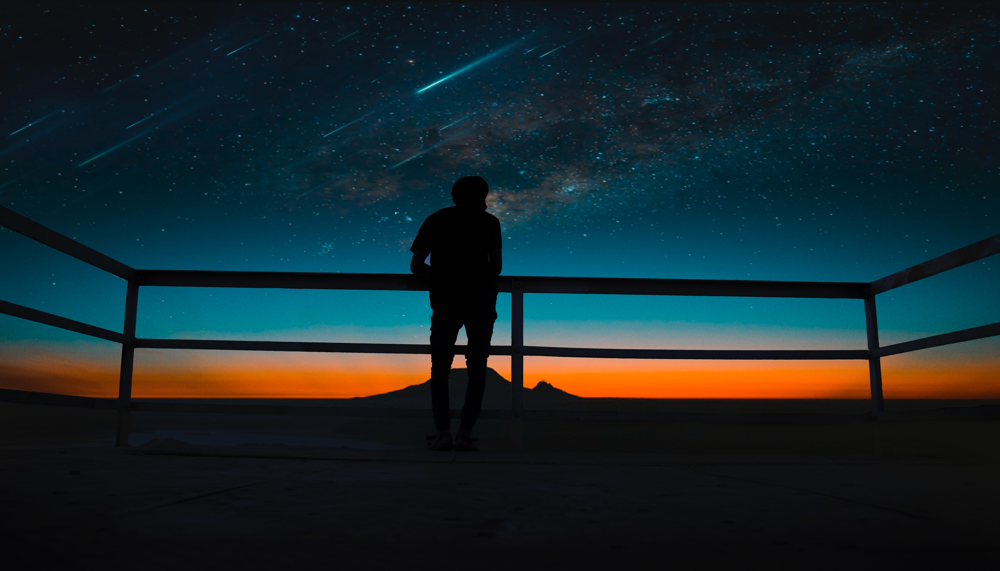

Introdução
Os asteroides são objetos fascinantes que orbitam o Sol e fazem parte do vasto sistema solar que nos cerca. Esses pequenos corpos celestes têm desempenhado um papel importante na evolução do nosso sistema solar e têm intrigado cientistas e astrônomos por gerações. Neste artigo, exploraremos o que são asteroides, de onde eles vêm, como eles afetaram a Terra e o que o futuro reserva para o estudo desses pequenos gigantes do espaço.

O que são Asteroides
Asteroides, também conhecidos como planetas menores, são corpos rochosos e metálicos que orbitam o Sol. Eles variam em tamanho desde pequenos pedaços de rocha até corpos de vários quilômetros de diâmetro. A maioria dos asteroides reside na região entre as órbitas de Marte e Júpiter, conhecida como o cinturão de asteroides, embora alguns possam ser encontrados em outras partes do sistema solar.
Origem e Composição
A origem dos asteroides é variada. Alguns asteroides são restos de planetas que nunca se formaram completamente devido à influência gravitacional de Júpiter, enquanto outros podem ser fragmentos de corpos maiores que colidiram no passado. A composição dos asteroides também varia, com alguns sendo compostos principalmente de rocha e metal, enquanto outros podem conter gelo e compostos orgânicos.
Impacto na Terra
A história da Terra está repleta de impactos de asteroides. Embora a maioria dos asteroides seja pequena demais para causar danos significativos, impactos de asteroides maiores podem ter consequências catastróficas. Acredita-se que o impacto de um asteroide de cerca de 10 quilômetros de diâmetro tenha levado à extinção dos dinossauros há cerca de 65 milhões de anos. Felizmente, os cientistas têm feito esforços significativos para rastrear asteroides potencialmente perigosos e desenvolver planos para desviar qualquer ameaça que possa surgir no futuro. Esses esforços incluem a missão OSIRIS-REx da NASA, que coletou amostras do asteroide Bennu, e o telescópio espacial NEOCam, que visa identificar e rastrear asteroides próximos da Terra.
exploração Espacial de Asteroides
A exploração de asteroides tem sido um dos focos emocionantes da exploração espacial nas últimas décadas. Várias missões foram lançadas para estudar esses corpos de perto. A sonda japonesa Hayabusa2, por exemplo, coletou amostras do asteroide Ryugu e retornou com elas à Terra, enquanto a sonda da NASA, a OSIRIS-REx, fez o mesmo com o asteroide Bennu. Além disso, a SpaceX anunciou planos ambiciosos para lançar uma missão chamada "DART" (Double Asteroid Redirection Test), cujo objetivo é colidir com um asteroide menor para testar a capacidade de desviar asteroides potencialmente perigoso
Conclusão
Os asteroides são verdadeiramente objetos celestes notáveis que têm desempenhado um papel importante na formação e evolução do nosso sistema solar. Eles também representam desafios e oportunidades emocionantes para a exploração espacial e a proteção da Terra contra impactos potencialmente catastróficos. À medida que continuamos a estudar esses pequenos gigantes do espaço, podemos esperar aprender mais sobre a história do nosso sistema solar e aprimorar nossas capacidades de prever e mitigar ameaças potenciais. Assim, os asteroides continuam a nos cativar e inspirar a exploração espacial.